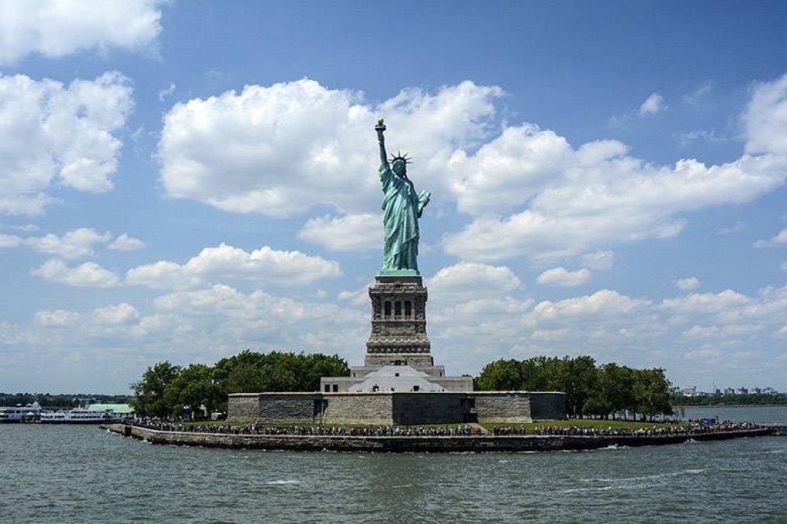
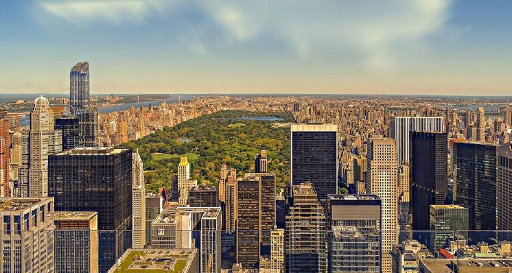
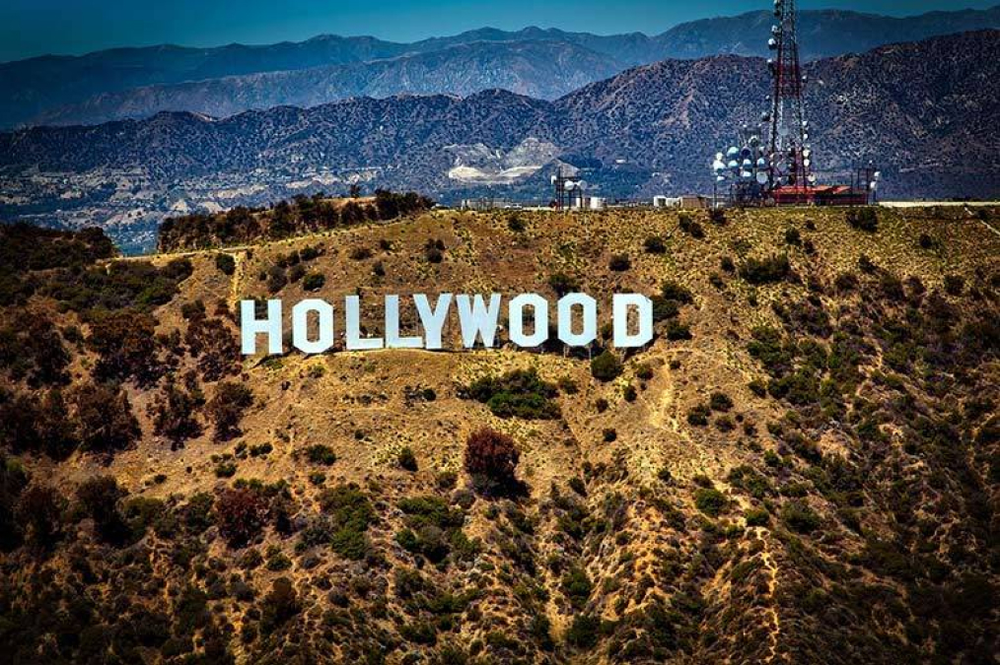

Місця
Статуя свободи

Маяк у гавані Нью-Йорка, розташований на невеликому острові. Монумент
заввишки 93 м вміщує у собі
музей заселення Америки і гвинтові сходи, що ведуть на оглядовий майданчик. Після терористичних атак
11 вересня "Леді Свободу" тимчасово закрили для відвідувачів. Сьогодні туристи можуть відвідати
музей лише з дозволу служби безпеки.
Центральний парк на острові Манхеттен

Оаза зелені посеред мегаполісу. 5 мільйонів дерев дозволяють забути про
міську суєту і відпочити від хмарочосів. Хоча щороку парк відвідують 25 мільйонів людей, його газони
буяють свіжою травою.
Білий дім
Символ демократії і президентська резиденція з музеєм. Політичну історію
США тут ілюструють численні твори мистецтва. 2 поверхи з 6 знаходяться під землею, а парк навколо
охороняють спецслужби. Проте, Білий дім відкритий для туристів за попереднім записом.
Пентагон
Символ демократії і президентська резиденція з музеєм. Політичну історію
США тут ілюструють численні твори мистецтва. 2 поверхи з 6 знаходяться під землею, а парк навколо
охороняють спецслужби. Проте, Білий дім відкритий для туристів за попереднім записом.
Голівуд

Місце, де відбуваються зйомки і монтаж найпопулярнішого кіно сучасності.
Селфі здалеку (на тлі схилу з літерами HOLLYWOOD) - обов`язковий пункт візиту в Лос-Анджелес. Також
місто відоме Алеєю зірок, що налічує 2 600 пам`ятних плит.